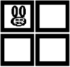

На екран виводиться меню:
Користувач вводить номер пункту меню і на екрані з’являється відповідне зображення смайла.
Комп’ютер випадковим чином вибирає початок і кінець проміжку (проміжок повинен знаходитися в межах від 1 до 100). Користувач вводить число і виграє, якщо число знаходиться у цьому проміжку, або розташоване від нього (від лівого або правого краю) не більше ніж на 10.
Комп’ютер загадує число від 1 до 10. Двоє користувачів надають свої відповіді. Виграє той, у кого число знаходиться ближче до загаданого комп’ютером числа.
Морський бій. Ворожий корабель, може знаходитись в одному із квадратів (кількість квадратів вводиться з клавіатури), які розташовані лінійно (один за одним) на річці.
Позиція корабля визначається комп’ютером випадковим чином.
Гра відбувається за правилами:
1) якщо користувач стріляє у заданий квадрат (тобто вводиться номер квадрата), то корабель потоплено.
2) якщо корабель знаходиться у сусідньому по відношенню до квадрата, де знаходиться корабель, то корабель пошкоджено (про це повідомляємо користувача).
За два постріли спробувати потопити корабель.
Модифікувати попередню задачу з можливістю після пострілу переміщення корабля у випадковим чином вибрану сусідню клітинку (якщо звичайно корабель не було потоплено за першим разом).
Полювання. Заєць знаходиться у верхньому лівому кутку поля. Поле складається з двох рядків і двох стовпців.
За один крок заєць може стрибнути у будь-яку із вільних клітинок. Користувач ставить пастку вказуючи номер рядка і стовпця клітинки. Якщо заєць потрапляє у пастку, то користувач виграв і отримав 100 балів. Якщо користувач зловить зайця за другою спробою, то одержує 50 балів.
Гра в кості. Правила гри:
Виграє той, у кого кількість балів більша.
З клавіатури вводиться кількість сторін багатокутника. Необхідно вивести назву фігури («трикутник», «чотирикутник», «п’ятикутинк», «шестикутник»).
З клавіатури вводиться перша літера розширення файлу («html», «doc», «jpeg», «mp3», «xls»). Вивести на екран назву програми, яка може відкрити цей тип файлу.